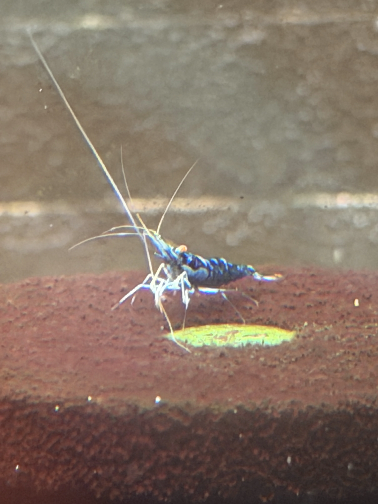

Caridina dennerli var.
金眼藍幽靈
Golden-Eye Blue Ghost
近距離觀察時，身體呈現冷冽的藍色金屬光澤；橘金複眼像兩枚微型寶石， 在黑色火山岩與深灰背景之間形成高辨識度對比。
培育者的意志
金眼藍幽靈不只是蝦。它是培育者在數千隻原種中，用兩年的光陰捕捉那一抹金屬藍光與金瞳， 再將其基因定格的傑作。飼養這款蝦，是在挑戰維持「人工變異與自然適應」之間的精準平衡。
- 品種名稱
- Caridina dennerli var. Golden-Eye Blue Ghost
- 定位
- Caridina dennerli 高階選育品系
- 基因穩定
- 極高，兩年以上累代觀察
- 飼養難度
- 2/10，新手友善